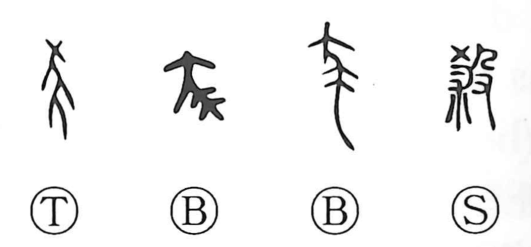

Explanation
殺 combines a curse-bearing animal on the left with 殳, a weapon wielded by a hand, on the right. The animal is an early form associated with 祟, harmful supernatural influence. Striking it down enacts a counter-rite against the curse it carries.
Destroying this creature was thought to weaken an enemy's curse. That is the starting point for the sense ‘to reduce’ or ‘to diminish,’ preserved alongside ‘to kill.’ 相殺 retains the idea of one force cancelling another. The killing is therefore part of a ritual action whose intended result is the lessening of harmful power.
The character subsequently applies to killing people, execution, destruction, and damaging or withering living things. It can also intensify a verb. These later uses broaden the violent action and its force beyond the particular creature in the original formation.